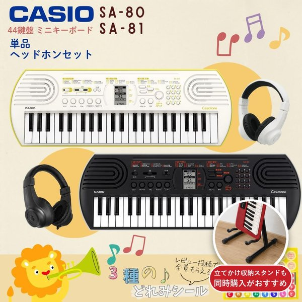
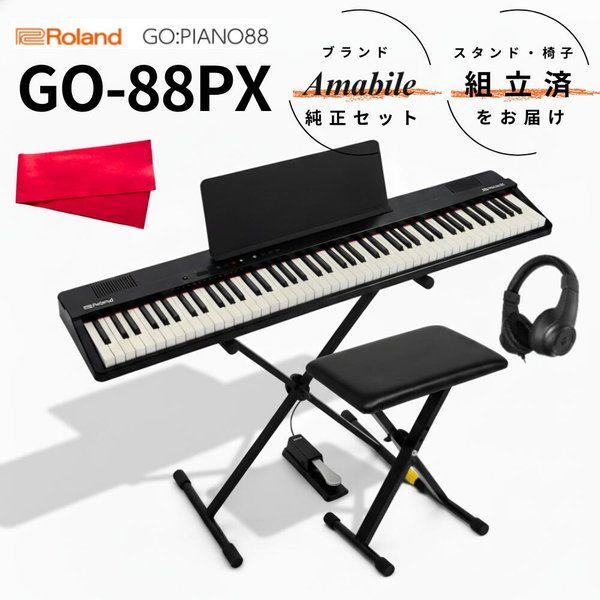
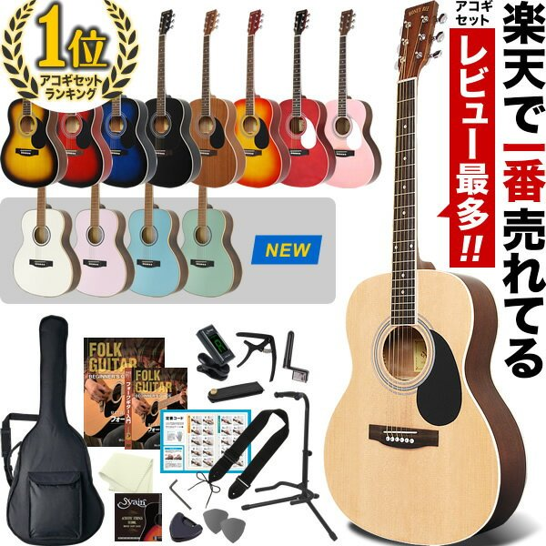
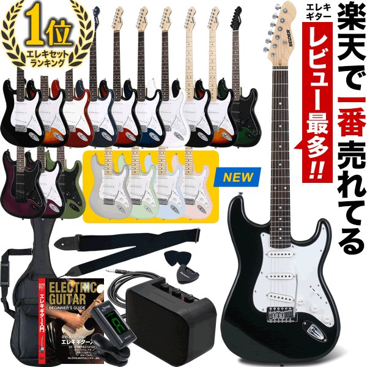
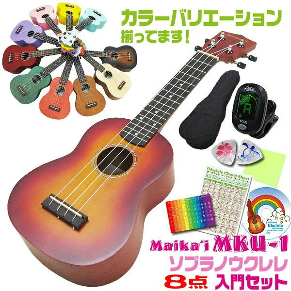
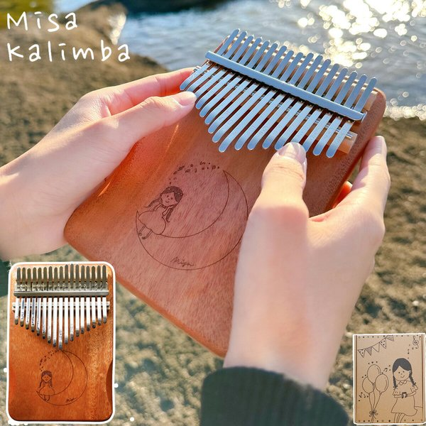
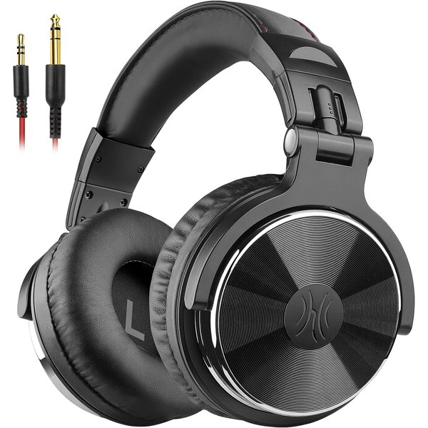
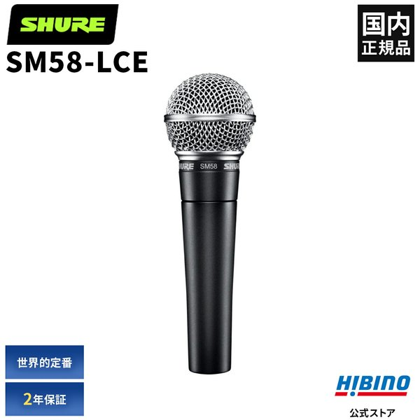
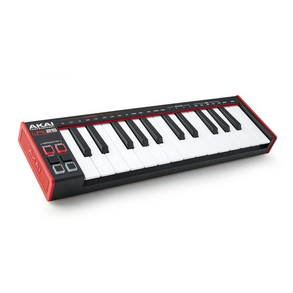
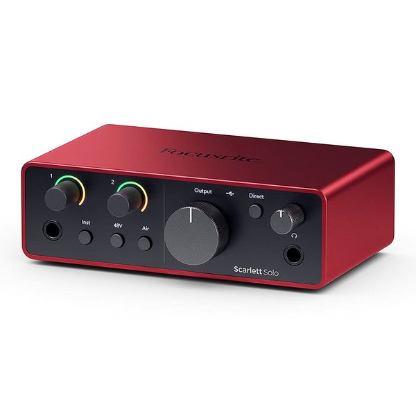

【2026年・おうち音楽10選】カシオ SA-80・Roland GO:PIANO88・HONEY BEE アコギ・SELDER ST-16・ARIA ウクレレ・Misa Kalimba・OneOdio Pro10・SHURE SM58・AKAI LPK25・Focusrite Scarlett Soloを実売価格で比較
楽器は、始めるときに何を買うかで続くかどうかが変わります。家で音を出せる時間は限られているので、ヘッドホンで弾けるもの、置き場所を取らないものから選ぶのが現実的です。
選ぶ軸は3つです。「まず弾くのか、録るのか」。弾くだけならキーボードやギター、録音までするならオーディオインターフェースとマイクが要ります。「次に音の大きさ」。集合住宅では、ヘッドホン端子のあるモデルか、生音の小さいウクレレやカリンバが向きます。「最後に置き場所」。88鍵はスタンドごと置く場所が必要で、25鍵やカリンバは机の上に収まります。なお、レビュー件数が50件に満たない商品は記事内に実数を明記しています。
本記事では、楽天市場で人気・高評価のおうち音楽・楽器・DTM機材10選を、実売価格とレビュー評価つきで写真付き紹介します。
- おすすめ10選 スペック・特徴比較表
- BEST 1｜カシオ SA-80 44鍵 電子キーボード（ヘッドホン付き）
- BEST 2｜Roland GO:PIANO88 GO-88PX 88鍵 電子ピアノ（スタンド・椅子セット）
- BEST 3｜HONEY BEE W-15/F-15 アコースティックギター 16点初心者セット
- BEST 4｜SELDER ST-16 エレキギター 13点初心者セット
- BEST 5｜ARIA Maika'i MKU-1 ソプラノウクレレ 8点入門セット
- BEST 6｜Misa Kalimba Music 17音カリンバ（専用ケース付き）
- BEST 7｜OneOdio Pro 10 オーバーイヤー モニターヘッドホン
- BEST 8｜SHURE SM58-LCE ダイナミックマイク（国内正規品）
- BEST 9｜AKAI LPK25 mk2 25鍵 MIDIキーボード
- BEST 10｜Focusrite Scarlett Solo Gen4 USBオーディオインターフェース
- 【読者負担0円】買わなくても得する無料サービス
- まとめ：おうち音楽・楽器10選の選び方
| 順位 | 商品名 | ブランド | 最大の特徴・おすすめ理由 | 総合評価 |
|---|---|---|---|---|
| BEST 1 | カシオ SA-80 44鍵 電子キーボード（ヘッドホン付き） | CASIO（カシオ） | 44鍵で両手の練習ができる | 4.50 |
| BEST 2 | Roland GO:PIANO88 GO-88PX 88鍵 電子ピアノ（スタンド・椅子セット） | Roland（ローランド） | 88鍵で本格的に練習できる | 4.52 |
| BEST 3 | HONEY BEE W-15/F-15 アコースティックギター 16点初心者セット | HONEY BEE | 16点セットで別買いが要らない | 4.53 |
| BEST 4 | SELDER ST-16 エレキギター 13点初心者セット | SELDER（セルダー） | アンプ付きですぐ音が出せる | 4.45 |
| BEST 5 | ARIA Maika'i MKU-1 ソプラノウクレレ 8点入門セット | ARIA（アリア／マイカイ） | 4弦でコードを覚えやすい | 4.58 |
| BEST 6 | Misa Kalimba Music 17音カリンバ（専用ケース付き） | Misa Kalimba（ミサカリンバ） | 17音で童謡や流行曲を弾ける | 4.78 |
| BEST 7 | OneOdio Pro 10 オーバーイヤー モニターヘッドホン | OneOdio | 6.35mmと3.5mmの両対応 | 4.62 |
| BEST 8 | SHURE SM58-LCE ダイナミックマイク（国内正規品） | SHURE（シュア） | 定番のダイナミックマイク | 4.89 |
| BEST 9 | AKAI LPK25 mk2 25鍵 MIDIキーボード | AKAI（アカイ） | 25鍵で鞄に入る | 5.00 |
| BEST 10 | Focusrite Scarlett Solo Gen4 USBオーディオインターフェース | Focusrite（フォーカスライト） | マイク1・楽器1の入力 | 5.00 |
カシオ SA-80 44鍵 電子キーボード（ヘッドホン付き）

カシオのSA-80は、44鍵のミニ鍵盤に内蔵音色とリズムをまとめた入門キーボードです。同色のヘッドホンが付属し、夜でも音を外に出さずに練習できます。単3電池でも動くので、リビングから子どもの部屋まで持ち運べます。楽天市場での実売価格は約7,980円（2026年11月時点）。
- 44鍵で両手の練習ができる
- ヘッドホン付きで夜でも弾ける
- 電池駆動で置き場所を選ばない
- 鍵盤はミニサイズなので、ピアノのタッチとは違う
Roland GO:PIANO88 GO-88PX 88鍵 電子ピアノ（スタンド・椅子セット）

ローランドのGO:PIANO88は、88鍵のフル鍵盤を薄い筐体に収めた電子ピアノです。スタンドと椅子がセットになっているので、届いた日に組んで置けます。ヘッドホン端子があり、夜の練習でも音を外に出さずに済みます。楽天市場での実売価格は約39,600円（2026年11月時点）。
- 88鍵で本格的に練習できる
- スタンドと椅子がセット
- ヘッドホン端子付きで夜も弾ける
- 本体に重さがあるので、頻繁な移動には向かない
HONEY BEE W-15/F-15 アコースティックギター 16点初心者セット

HONEY BEEのアコースティックギターに、ケースやチューナー、カポ、予備弦などをまとめた16点セットです。届いた箱を開ければ、その日から練習を始められます。弦を押さえる力がまだ足りない人でも鳴らしやすいモデルです。楽天市場での実売価格は約16,980円（2026年11月時点）。
- 16点セットで別買いが要らない
- チューナー付きですぐ合わせられる
- レビュー4,959件の定番
- セットの小物は入門用なので、こだわる人は差し替えたくなる
SELDER ST-16 エレキギター 13点初心者セット

セルダーのST-16は、ストラトキャスター型のエレキギターに、アンプやシールド、ストラップ、ピックをまとめた13点セットです。アンプまで含まれているので、届いた日のうちに音を出せます。色違いで揃えやすいのも選びやすいところです。楽天市場での実売価格は約17,800円（2026年11月時点）。
- アンプ付きですぐ音が出せる
- 13点セットで足りる
- レビュー4,493件の定番
- 付属のアンプは練習用の小出力で、バンドでは物足りない
ARIA Maika'i MKU-1 ソプラノウクレレ 8点入門セット

アリアのマイカイ MKU-1 は、ソプラノサイズのウクレレにケースやチューナー、ストラップなどを添えた8点セットです。本体はカラーを選べ、届いてすぐに弾き始められます。4本の弦で押さえる場所も少なく、最初の楽器に向いています。楽天市場での実売価格は約4,580円（2026年11月時点）。
- 4弦でコードを覚えやすい
- 8点セットで届く
- ソプラノサイズで持ち歩ける
- ソプラノは音域が狭く、低い音は出ない
Misa Kalimba Music 17音カリンバ（専用ケース付き）

Misa Kalimba Musicの17音カリンバは、木の板に金属の簧を並べた親指ピアノです。数字の譜面を見ながら親指で弾けるので、楽譜が読めなくても始められます。専用ケースが付き、机の上でも鳴らせます。楽天市場での実売価格は約6,600円（2026年11月時点）。
- 17音で童謡や流行曲を弾ける
- 小型で持ち歩ける
- レビュー99件の人気モデル
- 音程は演奏の前に自分で合わせる必要がある
OneOdio Pro 10 オーバーイヤー モニターヘッドホン

OneOdioのPro10は、50mmドライバーを積んだ密閉型のオーバーイヤーヘッドホンです。6.35mmと3.5mmの両方のプラグに対応し、楽器用アンプにもパソコンにも直接つなげます。有線なので、録音や練習で音の遅れが出ません。楽天市場での実売価格は約4,699円（2026年11月時点）。
- 6.35mmと3.5mmの両対応
- 密閉型で音漏れしにくい
- レビュー1,439件の実売モデル
- 有線なので、コードが邪魔になる場面がある
SHURE SM58-LCE ダイナミックマイク（国内正規品）

シュアのSM58は、ライブや録音で長く使われているダイナミックマイクです。単一指向性で、正面の声を拾い、後ろの音を入りにくくします。マイクスタンドとオーディオインターフェースを組み合わせれば、自宅で歌やナレーションを録れます。楽天市場での実売価格は約15,950円（2026年11月時点）。
- 定番のダイナミックマイク
- 単一指向性で周囲の音を拾いにくい
- 丈夫で長く使える
- レビュー9件と少なく、息づかいの繊細な表現はコンデンサー式に譲る
AKAI LPK25 mk2 25鍵 MIDIキーボード

アカイのLPK25 mk2は、25鍵のミニ鍵盤を載せたMIDIキーボードコントローラーです。USBでパソコンにつなぎ、DTMソフトの音を鳴らしたり、ドラムを打ち込んだりできます。鞄に入る大きさなので、外出先の作業にも使えます。楽天市場での実売価格は約6,800円（2026年11月時点）。
- 25鍵で鞄に入る
- USBバスパワーで動く
- アルペジエーターを内蔵
- レビュー6件と少なく、鍵盤はミニサイズで弾きごたえは控えめ
Focusrite Scarlett Solo Gen4 USBオーディオインターフェース

フォーカスライトのScarlett Solo Gen4は、マイク入力と楽器入力が1系統ずつあるUSBオーディオインターフェースです。パソコンにつなぐだけで録音の準備ができ、マイクとギターを別々の日に録る使い方に向いています。ヘッドホン端子があり、録った音をその場で確認できます。楽天市場での実売価格は約19,800円（2026年11月時点）。
- マイク1・楽器1の入力
- USBバスパワーで動く
- ヘッドホンで録音を確認できる
- レビュー2件と少なく、マイクと楽器の同時録音には入力が足りない
この記事の商品を買う前に、まずは無料で得する選択肢をチェック。どれも登録・利用は0円で、無料期間中に解約すれば料金はかかりません。読みたい雑誌がある人、ポイントを貯めたい人、アンケートなら気軽という人、それぞれに合うものを選べます。
初回31日無料・無料期間中に解約すれば0円 → 楽天ポイントモール｜登録無料で毎日ポイ活
買い物なしでもポイントが貯まる無料サービス → 楽天インサイト｜アンケートに答えてポイント
登録無料・すきま時間のアンケートで貯まる → 楽天カード｜年会費永年無料
新規発行・年会費ずっと0円 →
4つのサービスの違いと使い分けは「出費0円で得する！買わずにポイントが貯まる無料サービス厳選4選」でまとめています。
💡 まとめ：おうち音楽・楽器10選の選び方
家で音楽を始めるときは、弾く楽器と録る機材を分けて考えると揃えやすくなります。鍵盤は、44鍵のカシオ SA-80で指の動きを覚え、88鍵に進むならRoland GO:PIANO88。ギターはHONEY BEEのアコギ16点セットか、アンプまで付くSELDER ST-16。小さく始めるならARIAのウクレレとMisa Kalimbaの17音カリンバです。録音はSHURE SM58とFocusrite Scarlett Solo、音を聴くためのOneOdio Pro10、打ち込み用のAKAI LPK25を足すと一通り揃います。まずは1台とヘッドホンから始めて、続いたら次の機材を足すのが、無駄の少ない買い方です。
楽天市場では「5と0のつく日」や「お買い物マラソン」などのキャンペーンに合わせて購入すると、ポイント還元が最大化してお得に手に入ります。ぜひチェックしてみてくださいね。